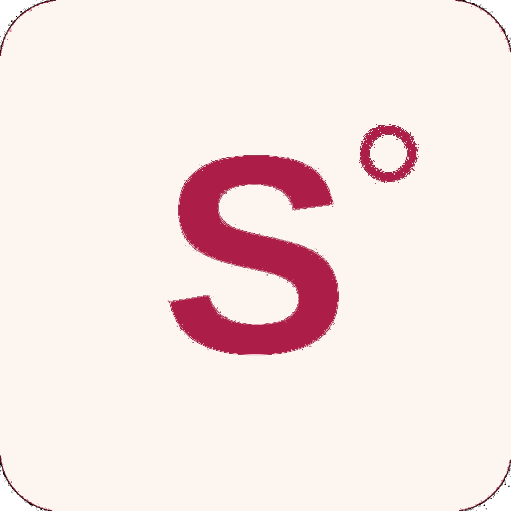

Lo que no se ve, no cambia.
Para líderes de equipo que necesitan mejorar sus resultados, en el corto plazo y sin afectar su operación.
Ver cómo trabajoEquipos con resultados muy distintos
Mismo proceso, mismo objetivo, pero un equipo rinde y otro no. La diferencia no está en el esfuerzo, está en algo que nadie ha hecho visible.
Reuniones que no terminan en decisiones claras
Se discute, se acuerda "en general", y la semana siguiente cada uno entendió algo distinto — y se vuelve a discutir el mismo tema.
El costo invisible del retrabajo
Algo se hace, se revisa, se rehace. Nadie cuantifica cuánto tiempo y esfuerzo se pierde en hacer dos veces lo que debió hacerse bien la primera.
Estos son solo algunos ejemplos. Cada equipo tiene sus propios patrones.
El primer paso es verlos y cuantificarlos.
Nos integramos a las dinámicas clave del equipo y cruzamos lo que observamos en terreno, la data operacional y el objetivo buscado. Así definimos microintervenciones que medimos y ajustamos para movilizar el resultado.
No todos los equipos necesitan lo mismo. Por eso trabajamos en tres niveles, según el punto de partida y objetivo de cada uno.
Tu equipo no está cumpliendo las metas y no tienes claridad por dónde empezar para mejorar el resultado.
5 semanasIdentificar las problemáticas que más impactan el resultado y priorizarlas.
Entendemos el desafío, revisamos información interna, nos integramos como observadores a la operación y analizamos supuestos e impactos. El equipo trabaja con normalidad.
4.5 horas semanales
2.5 horas semanales promedio, distribuidas en diferentes días — no todas involucran a todo el equipo.
Hoja de ruta con intervenciones ordenadas por impacto.
En colaboración con BeAdaptive según requerimiento.
Tienes claridad de tu indicador y los problemas a abordar, pero necesitas que el cambio ocurra rápido y sin desgastar a tu equipo.
10 semanasEjecutar las intervenciones priorizadas y movilizar el resultado en el corto plazo.
Nos integramos a la operación, diseñamos microintervenciones junto al equipo, las implementamos en terreno y medimos el avance. El equipo trabaja con normalidad.
4 horas semanales
2 horas semanales promedio — con mayor intensidad desde la semana 5 en adelante.
Microintervenciones implementadas con resultados medibles.
En colaboración con BeAdaptive según requerimiento.
Necesitas mejorar y sostener una competencia clave en tu equipo.
4 a 6 semanasInstalar y sostener una competencia clave en el equipo, con aplicación directa en el puesto de trabajo.
Diseñamos el programa según la competencia a desarrollar, facilitamos talleres presenciales, acompañamos la aplicación en terreno y damos feedback directo al equipo en sus rutinas de trabajo.
3 horas semanales
2.5 horas semanales promedio — con mayor intensidad en las últimas 2 semanas.
Competencias instaladas en la práctica.
En colaboración con BeAdaptive según requerimiento.
s.henriquez.castets@gmail.com
Pasé más de 20 años liderando operaciones comerciales en retail y servicios — en oficina y mucho terreno. Ahí aprendí a identificar lo que nadie ve: los patrones que operan en silencio y que son los que más mueven los resultados.
Hoy mi propósito es ayudar a otros líderes a resolver lo que yo aprendí a resolver. Porque el problema casi nunca está donde todos miran.